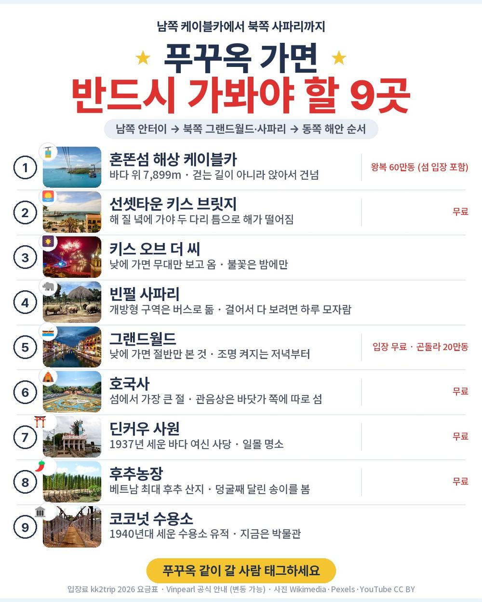
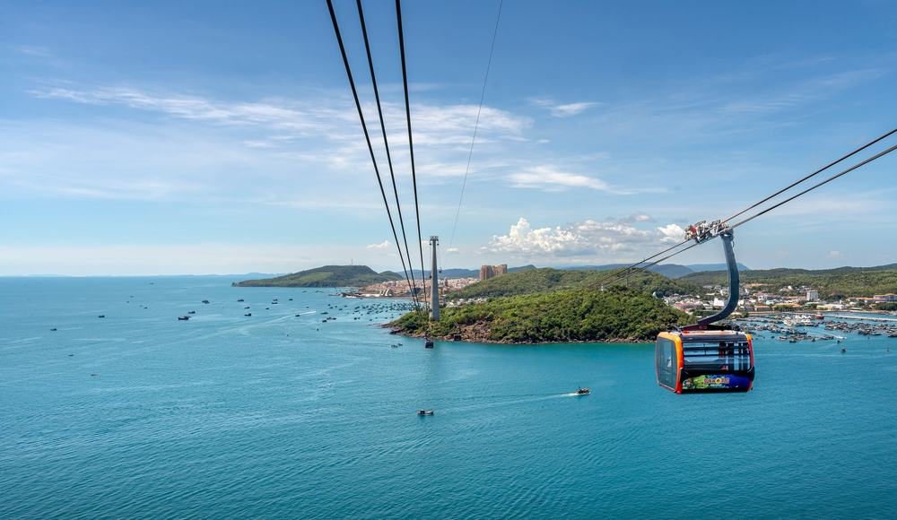
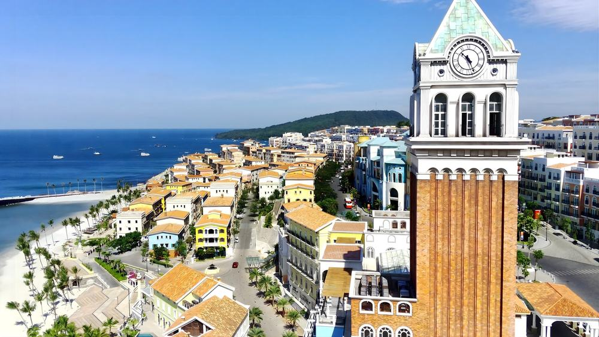
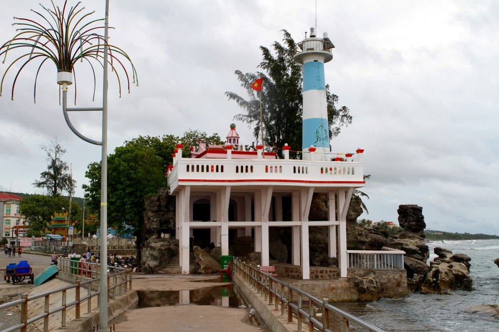
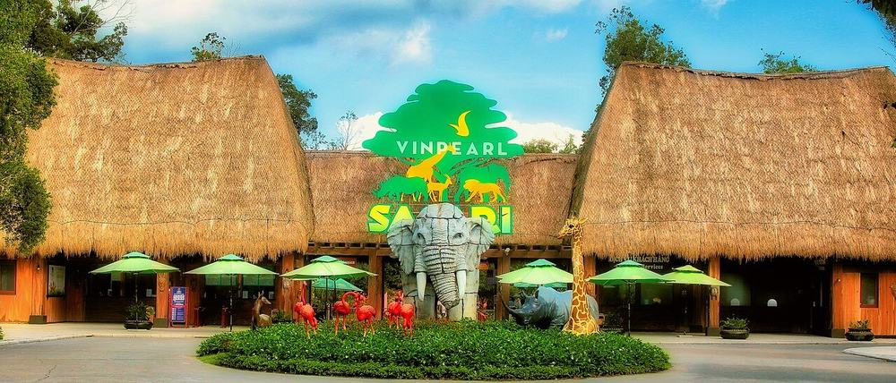
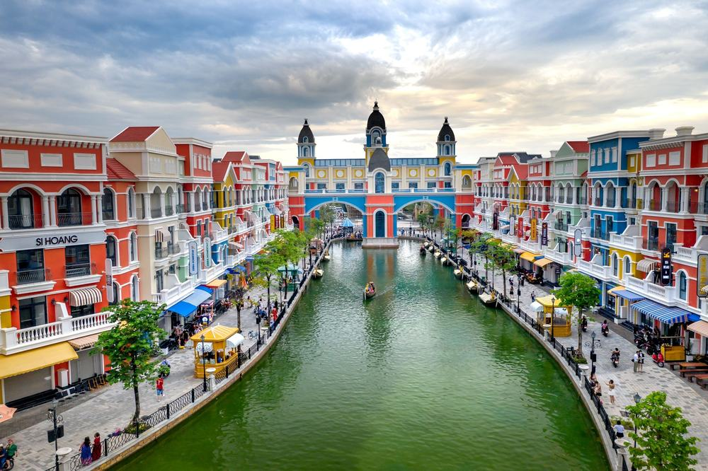

롯데관광 푸꾸옥 패키지 여행 64만원, 케이블카에 빈펄 사파리까지 넣은 노옵션

부모님 모시고 갈 동남아를 부산 출발로 찾고 있었음. 김해에서 뜨는 베트남 노선은 많은데 대부분 밤에 떠서 새벽에 내리는 일정이라 첫날이 통째로 날아감.
그러다 푸꾸옥 5일짜리가 하나 걸림. 이건 김해에서 아침 7시 45분에 뜸. 그리고 상품 이름에 '노옵션'이 붙어 있는데, 케이블카·사파리·수상 공연·마사지 90분이 다 포함으로 적혀 있었음.
결론 — 추천. 값 대비 들어 있는 관광이 많고 저녁 네 번이 다 한식임. 다만 귀국 밤 비행기가 힘든 분, 쇼핑센터 방문 자체가 싫은 분, 호텔 이름을 미리 알아야 하는 분은 아님.
64만 9천원에 저게 진짜 다 되는지 궁금해서 원문을 뜯어봤음.
| 항목 | 내용 |
|---|---|
| 가격 | 1인 649,000원 (2인 1실 기준 · 10월 출발) |
| 여행사 | 롯데관광 |
| 항공 | 비엣젯 직항 · 김해 07:45 → 푸꾸옥 11:10 / 귀국 23:10 → 김해 06:40 |
| 숙소 | 5성급 리조트 3박 (소나시·소나가 비치·노보텔·래디슨 블루 중 배정 또는 동급) |
| 일정 | 3박 5일 · 전 일정 전용 차량 · 한국어 가이드 |
| 가는 곳 | 해상 케이블카 · 혼똔섬 · 빈펄 사파리 · 선셋타운 · 그랜드월드 · 호국사 (관광 7회) |
| 순서 | 다루는 것 | 한 줄 결론 |
|---|---|---|
| 1 | 구성 뜯어보기 | 관광 7회에 선택관광 목록이 아예 없음 |
| 2 | 일정 살펴보기 | 아침에 도착해 첫날부터 관광함 |
| 3 | 자유여행 VS 패키지 | 직접 짜면 99만원 | 패키지가 26만원쯤 쌈 |
1. 구성 뜯어보기
요약 — 항공·5성급 리조트 3박·식사 11회·관광 7회·가이드·보험이 다 들어 있음. 현지에서 반드시 더 내는 돈은 가이드·기사 경비 50달러 하나임.
1-1. 64만 9천원에 들어 있는 것

포함 항목을 원문에서 그대로 옮기면 이럼.
- 왕복 항공권 + 유류할증료 + 세금 (위탁 수하물 20kg)
- 5성급 리조트 3박 (2인 1실)
- 식사 11회 — 저녁 네 번이 전부 한식, 3일차는 무제한 삼겹살
- 관광 7회 입장료
- 전 일정 전용 차량 · 한국어 가이드 · 여행자보험
관광 7회가 핵심임. 원문에 적힌 이름을 그대로 옮기면 썬월드 해상 케이블카 + 혼똔섬 자연공원 + 아쿠아토피아 워터파크, 빈펄 사파리, 선셋타운, 전신마사지 90분, 부이페스트 야시장, 호국사, 코코넛 수용소임. 일정표에는 여기에 그랜드월드, 수상 공연 키스 오브 더 씨 관람, 후추농장, 진주박물관, 딘커우 사원이 더 있음.
푸꾸옥 저가 상품은 케이블카나 사파리를 현지에서 선택관광으로 파는 경우가 많아서 이건 확인할 값어치가 있음.
▶ 출발일별 요금 확인하기
https://naver.me/5ECZGrbx — 출발일에 따라 값이 달라짐
1-2. 쇼핑과 선택관광

선택관광은 없음. 상품 이름에 '노옵션'이 붙어 있고, 원문 선택관광 칸도 비어 있음. 현지에서 "이거 하나 더 하시죠" 소리를 들을 일이 구조적으로 적음.
쇼핑은 2회임. 노니·침향 약 40분, 커피·잡화 약 40분. 사는 건 자유고, 한 달 안에 영수증과 함께 반품하면 환불됨(수수료 10~15% 공제).
1-3. 현장에서 더 낼 돈
| 항목 | 금액 | 비고 |
|---|---|---|
| 가이드·기사 경비 | USD 100 (약 140,000원) | 1인 50달러 · 성인·소아 동일 · 현지 지불 |
| 마사지 팁 | 약 10,000원 | 원문에 '팁별도'로 적혀 있음 |
| 사파리 먹이 주기 | 3만~15만 동 (약 1,600~8,000원) | 안 하면 0 |
| 음료·간식 | 약 10,000원 | 식사에 나오는 것 외 |
| 왕복 기내식 | 사 먹으면 별도 | 비엣젯은 기내식 불포함 |
| 합계 (2인) | 약 160,000원 | 상품가 129만 8천 + 16만 = 약 146만원 |
한 사람으로 치면 약 73만원임.
1-4. 1절 자주 나오는 질문
Q. 선택관광이 진짜 없나요?
A. 원문 선택관광 칸이 비어 있고 상품 이름에 '노옵션'이 붙어 있음. 케이블카·워터파크·사파리·공연 관람·마사지 90분이 포함 항목으로 적혀 있음.
Q. 가이드 경비는 따로 내나요?
A. 냄. 1인 50달러를 현지에서 지불함. 상품가 밖임. 달러 현금으로 챙기면 됨.
Q. 인솔자가 같이 가나요?
A. 인솔자는 불포함임. 푸꾸옥 공항에서 한국어 가이드를 만나 전 일정을 함께 함.
2. 일정 살펴보기
요약 — 1일차 오전 도착 후 딘커우 사원, 2일차 케이블카·혼똔섬·선셋타운·밤 공연, 3일차 빈펄 사파리·그랜드월드·마사지, 4일차 호국사·코코넛 수용소·후추농장 후 밤 비행기. 제일 꽉 찬 날은 2일차임.
2-1. 하루하루 어디를 가나

| 일차 | 가는 곳 | 식사 | 숙소 |
|---|---|---|---|
| DAY 1 | 김해 07:45 → 푸꾸옥 11:10 → 딘커우 사원 | 중 현지식 · 석 한식 | 5성급 리조트 |
| DAY 2 | 해상 케이블카 · 혼똔섬 · 아쿠아토피아 → 선셋타운 → 부이페스트 야시장 · 키스 오브 더 씨 | 조 · 중 · 석 한식 | 5성급 리조트 |
| DAY 3 | 빈펄 사파리 → 그랜드월드 자유시간 → 전신마사지 90분 | 조 · 중 · 석 무제한 삼겹살 | 5성급 리조트 |
| DAY 4 | 호국사 · 코코넛 수용소 → 쇼핑 2회 → 후추농장 · 진주박물관 → 푸꾸옥 23:10 | 조 · 중 · 석 한식 | 기내 |
| DAY 5 | 김해 06:40 도착 | — | — |
| 일차 | 버스 이동 | 걷기 | 포함 식사 |
|---|---|---|---|
| DAY 1 | 약 0.7시간 | 적음 | 중 현지식 · 석 한식 |
| DAY 2 | 약 1.5시간 | 보통 | 조 호텔식 · 중 현지식 · 석 한식 |
| DAY 3 | 약 1.5시간 | 보통 | 조 호텔식 · 중 현지식 · 석 한식 |
| DAY 4 | 약 2시간 | 적음 | 조 호텔식 · 중 현지식 · 석 한식 |
| DAY 5 | 거의 없음 | 적음 | 포함 끼니 없음 |
| 합계 | 약 5.7시간 | - | 11끼 (현지식 4 · 한식 4 · 호텔식 3) |
요약 — 버스 이동은 5일 동안 약 5.7시간, 포함 식사는 11끼(현지식 4 · 한식 4 · 호텔식 3)임. 가장 많이 걷는 날은 DAY 2임.
2-2. 아침 비행기라 첫날이 살아 있음

김해 출발 베트남 상품은 밤에 떠서 새벽에 내리는 게 흔함. 이건 반대로 아침 7시 45분에 떠서 현지 오전 11시 10분에 내림. 푸꾸옥이 한국보다 두 시간 늦어서 비행은 다섯 시간 반임.
점심 먹고 바로 딘커우 사원을 보고, 저녁은 한식임. 첫날부터 일정이 돌아감.
대신 돌아올 때가 밤 비행기임. 4일차 밤 11시 10분에 떠서 김해에 아침 6시 40분에 내림. 이게 이 상품에서 제일 먼저 갈리는 지점임.
2-3. 2일차와 3일차가 이 상품의 몸통

2일차는 해상 케이블카로 혼똔섬에 건너감. 편도 25분쯤, 발밑으로 청록빛 바다와 어촌이 지나감. 섬 안은 무료 버기카로 다니고 아쿠아토피아 워터파크까지 들어 있음. 섬 안에서는 베트남 동 현금을 쓰라고 원문에 적혀 있음.
오후엔 선셋타운에서 키스 브릿지를 보고, 저녁 먹고 부이페스트 야시장을 걸은 뒤 밤에 수상 공연 키스 오브 더 씨를 봄.
3일차는 빈펄 사파리임. 사파리 버스를 타고 동물 구역을 지나가서 걷는 양이 적음. 기린·코끼리 먹이 주기는 유료(한 번 3만~15만 동)고, 순환 트램도 13만 동 별도임. 오후엔 그랜드월드 자유시간, 그다음 전신마사지 90분, 저녁이 무제한 삼겹살임.
2-4. 호텔은 네 곳 중 배정

원문 숙소 칸에 베스트웨스턴 프리미어 소나시, 소나가 비치 리조트, 노보텔 푸꾸옥 리조트, 래디슨 블루 리조트가 적혀 있고 '또는 동급'이 붙어 있음. 어디로 갈지는 출발 전에 정해짐.
호텔 이름을 미리 알아야 마음이 놓이는 분께는 걸리는 점임. 대신 등급은 정해져 있음 — 네 곳 다 5성급 해변 리조트임. 조식은 2·3·4일차 세 번 다 포함임.
2-5. 2절 자주 나오는 질문
Q. 많이 걷나요?
A. 2일차가 제일 많음. 혼똔섬 안을 다니는 날이라 그럼. 다만 섬 안은 무료 버기카가 돌고, 사파리는 버스로 돎. 계단이 있는 곳은 4일차 호국사 정도임.
Q. 비자 필요한가요?
A. 한국 국적은 45일 무비자임. 다만 2026년 6월부터 푸꾸옥 입국자는 온라인 입국 신고를 미리 해야 한다고 원문에 적혀 있음.
Q. 시차는요?
A. 한국보다 두 시간 늦음. 김해 7시 45분에 떠서 현지 11시 10분에 내리는 게 그 때문임.
3. 자유여행 VS 패키지 | 직접 짜면 99만원
요약 — 같은 일정을 직접 짜면 1인 99만원쯤 듦. 패키지는 가이드 경비와 팁까지 더해 약 73만원임. 패키지가 26만원쯤 쌈.
3-1. 같은 일정을 직접 짜면

같은 일정을 혼자 짠다고 치고 항목별로 계산해 봄. 10월 기준, 2인 1실 1인분임. 환율은 1달러 1,400원, 1만 동 약 550원으로 잡았음. 대부분 추정치라 근거 열에 적어 둠.
| 항목 | 금액 | 근거 |
|---|---|---|
| 김해–푸꾸옥 왕복 항공 | 400,000원 | 10월 직항 왕복 · 위탁 수하물 포함 기준 (추정) |
| 5성급 리조트 3박 | 225,000원 | 해변 5성급 2인 1실 1박 15만원 안팎의 1인분 (추정) |
| 해상 케이블카 + 혼똔섬 + 워터파크 | 33,000원 | 왕복 60만 동 기준 (추정) |
| 빈펄 사파리 입장 | 35,000원 | 성인 1인 (추정) |
| 키스 오브 더 씨 관람 | 30,000원 | 일반석 (추정) |
| 전신마사지 90분 | 42,000원 | 원문 표기 '$30 상당' |
| 식사 11회 | 110,000원 | 패키지 포함분과 같은 끼니 · 1회 1만원 (추정) |
| 공항 ↔ 호텔 왕복 | 20,000원 | 택시·그랩 (추정) |
| 섬 안 이동 4일 | 80,000원 | 남쪽 케이블카·북쪽 사파리·동쪽 호국사를 그랩으로 (추정) |
| 여행자보험 | 15,000원 | 5일 기준 |
| 가이드 | — | 자유여행은 없음 |
| 합계 | 약 990,000원 |
패키지는 649,000원 + 가이드 경비 약 70,000원 + 팁·먹이 약 10,000원 = 약 729,000원임.
3-2. 그래서 뭐가 다른가
숫자만 봐도 패키지가 26만원쯤 쌈. 케이블카·사파리·공연·마사지 넷만 따로 사도 14만원인데 그걸 상품가 안에 넣은 것임.
그리고 표에 못 넣은 게 있음. 푸꾸옥은 섬이 큰데 대중교통이 거의 없음. 케이블카는 섬 남쪽 끝, 빈펄 사파리는 북쪽, 호국사는 동쪽 해안이라 자유여행이면 날마다 그랩을 불러야 함. 전용 차량 한 대가 나흘을 다 이어 주는 게 이 상품의 값어치임.
여기에 가이드가 붙음. 자유여행 계산표에 가이드 행이 비어 있는 게 그 뜻임 — 0원이 아니라 살 수 없는 것임.
3-3. 어느 쪽이 맞나
| 자유여행이 맞음 | 패키지가 맞음 |
|---|---|
| 리조트에서 안 나오고 쉴 것임 | 케이블카·사파리·공연을 다 볼 것임 |
| 그랩 부르는 게 익숙함 | 이동은 맡기고 앉아만 있고 싶음 |
| 저녁을 현지 식당에서 골라 먹고 싶음 | 저녁은 한식이 편함 |
| 쇼핑센터에 한 번도 안 들르고 싶음 | 선택관광 권유 없는 게 더 중요함 |
3-4. 3절 자주 나오는 질문
Q. 자유여행이 더 싸지 않나요?
A. 계산해 보면 자유여행이 약 99만원, 패키지가 약 73만원임. 케이블카·사파리·공연·마사지를 따로 사고 섬 안 이동을 그랩으로 하면 금방 벌어짐.
Q. 환전은 얼마나 하나요?
A. 가이드 경비 50달러는 달러 현금으로, 혼똔섬 안·야시장·사파리 먹이는 베트남 동으로. 1인 100달러면 넉넉함.
Q. 부산에 안 사는데 이 상품을 봐도 되나요?
A. 김해공항 출발이라 수도권이면 국내 이동이 먼저 붙음. 아침 7시 45분 비행기라 전날 부산에 와 있어야 해서 계산이 달라짐. 인천 출발 푸꾸옥 상품을 보시는 게 나음.
마무리
정리하면 이럼.
추천함. 64만 9천원에 해상 케이블카·혼똔섬·빈펄 사파리·키스 오브 더 씨·마사지 90분까지 관광 7회가 들어 있고, 선택관광이 없고, 5성급 리조트 3박에 저녁 네 번이 한식임. 현지에서 반드시 더 내는 돈은 가이드 경비 50달러 하나임.
이런 분은 고르면 안 됨. 귀국 밤 비행기가 힘든 분, 쇼핑센터 방문 자체가 싫은 분, 호텔 이름을 미리 알아야 마음이 놓이는 분.
걸리는 점이 있긴 한데 상품 흠이라기보다 맞는 사람과 안 맞는 사람을 가르는 조건에 가까움.
▶ 오늘 기준 출발일별 요금 보기
https://naver.me/5ECZGrbx
함께 보면 좋은 글
노랑풍선 오사카 패키지 여행 80만원, 나라 온천에 교토 청수사까지 넣은 이유
https://blog.naver.com/robotnady10/224425182825
참좋은여행 세부 패키지 여행 39만원, 호핑투어에 전신마사지까지 포함인 이유
https://blog.naver.com/robotnady10/224422306429
이 글에는 제휴 링크가 포함되어 있으며, 링크를 통해 예약하시면 일정 수수료를 받습니다. 가격은 동일합니다. 가격과 구성은 2026년 9월 29일 확인 기준이며 출발일에 따라 달라질 수 있습니다.
사진 출처: pq_hontom_cable_1 — Pexels / pq_kiss_bridge_1 — Wikimedia Commons / pq_sunset_town_1 — Pexels / pq_dinh_cau_1 — Wikimedia Commons / pq_vinpearl_safari_1 — Wikimedia Commons / kk_resort_pool_1 — Pexels / pq_grandworld_1 — Pexels